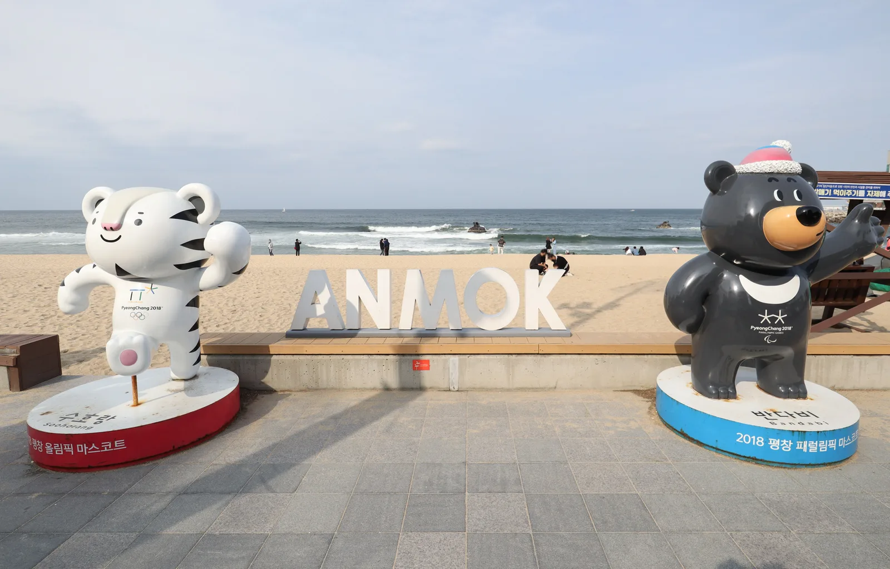
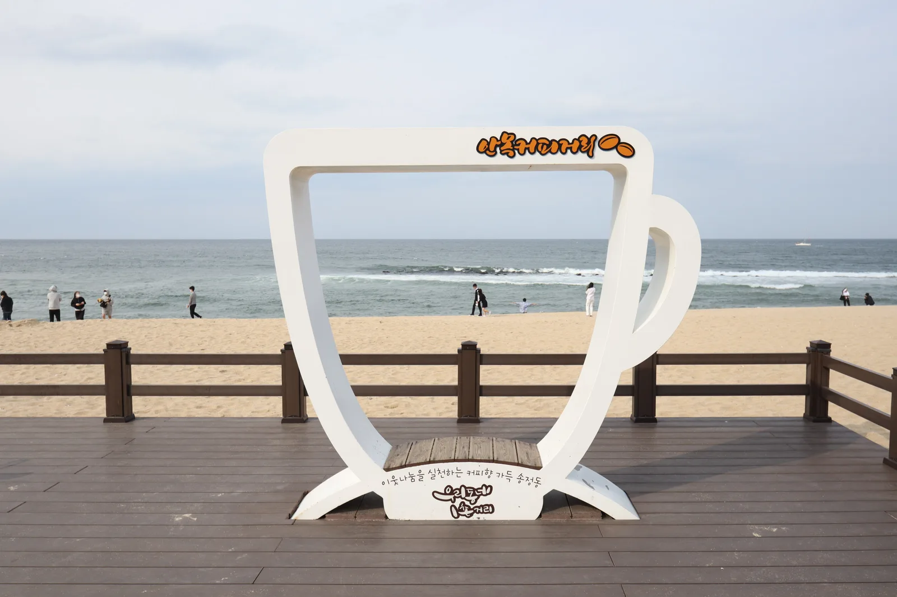
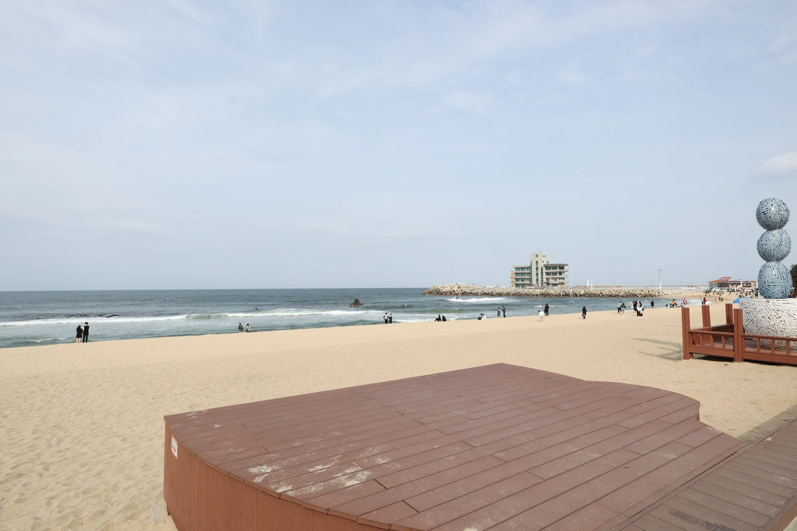
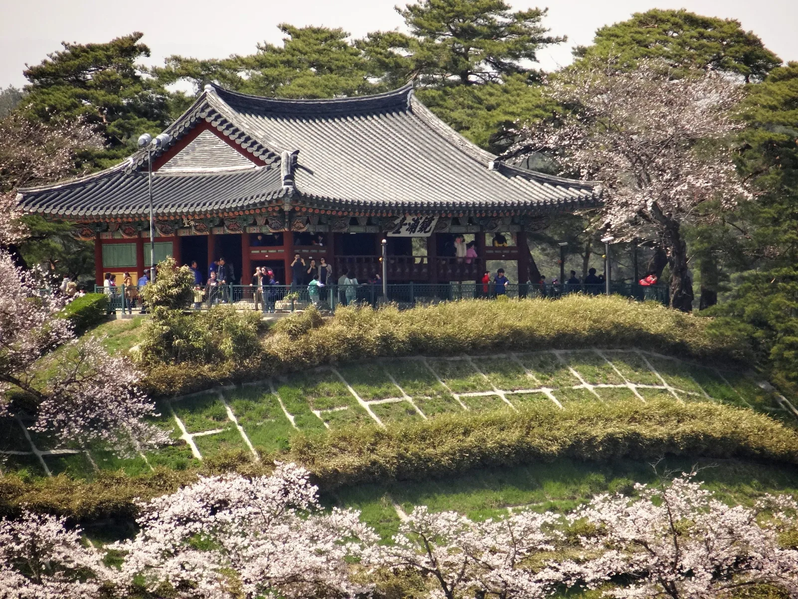
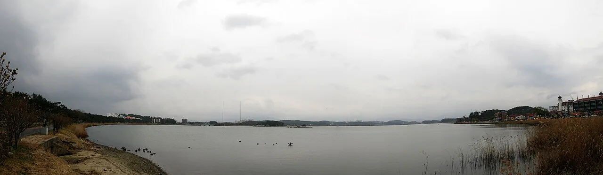
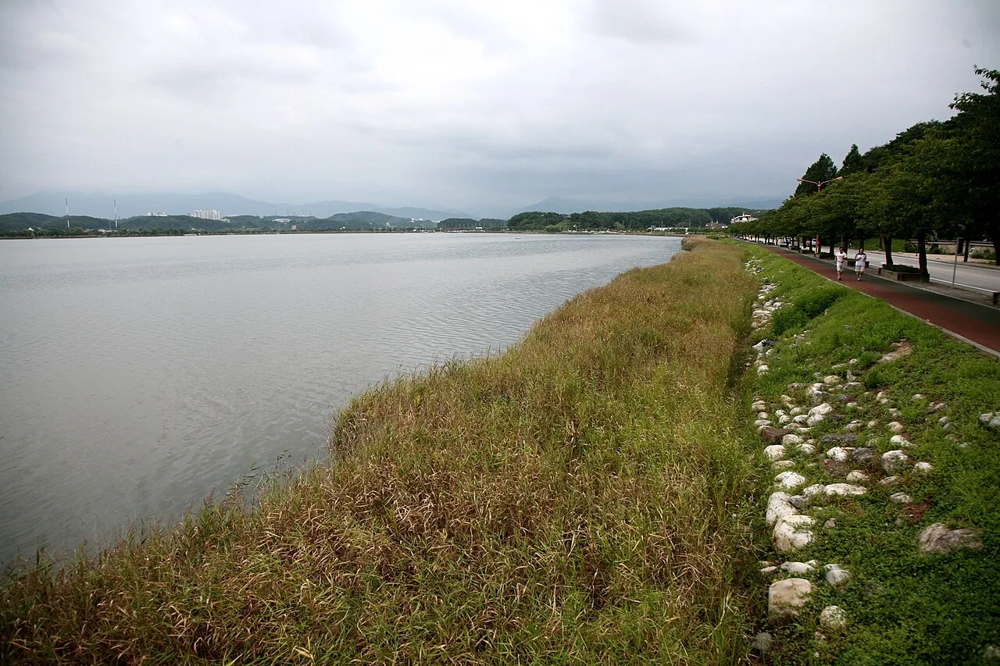

▲ 안목해변 입구의 'ANMOK' 조형물과 2018 평창올림픽 마스코트 수호랑·반다비. 이 해변을 따라 늘어선 카페 행렬이 지금의 커피거리다 ⓒ Wikimedia Commons (CC BY-SA 4.0, Mobius6)
강릉 여행을 검색하면 빠지지 않고 등장하는 사진이 있다. 백사장 바로 앞, 파도 소리가 들리는 통유리창 카페에서 마시는 커피 한 잔. 이 장면의 배경이 되는 곳이 강릉 안목해변 커피거리다. 지금은 카페 30여 곳이 늘어선 전국구 명소지만, 시작은 관광 상품과 거리가 멀었다. 어부들이 쉬어가던 자판기 커피 몇 잔이었다.
1. 자판기 커피 두세 잔에서 시작된 거리

▲ 안목해변에 놓인 커피잔 모양 조형물. 지금은 이런 포토존이 늘어선 거리지만, 40년 전에는 자판기 몇 대가 전부였다 ⓒ Wikimedia Commons (CC BY-SA 4.0)
약 30~40년 전, 안목 포구에는 커피자판기 5~6대가 놓여 있었다. 조업을 마친 어부들이 종이컵에 달고 뜨거운 믹스커피를 뽑아 마시며 피로를 풀던 자리였다. 그런데 이 자판기 커피를 관광객들도 즐기기 시작하면서 '안목 커피'라는 말이 생겨났다. 자판기 믹스커피에 불과했지만, 바다를 보며 마신다는 경험 자체가 하나의 감성 브랜드가 된 셈이다.
이후 대한민국 1세대 바리스타들이 이 해변에 자리를 잡으면서 거리의 성격이 완전히 바뀌었다. 자판기 명소였던 안목은 순식간에 스페셜티 커피를 마실 수 있는 곳으로 이미지를 바꿔갔다. '안목 커피거리'라는 명칭이 공식적으로 자리 잡은 계기는 2009년 시작된 강릉커피축제였다. 같은 시기 전국적 인기를 끌던 예능 프로그램 '1박2일'에 이 일대 카페들이 소개되면서, 안목해변은 지역 명소에서 전국구 여행지로 발돋움했다.
2. 1998년, 두 바리스타가 해변에 카페를 열다

▲ '안목커피거리'라고 적힌 대형 커피잔 조형 프레임. 이 표지 뒤로 테라로사와 보헤미안을 비롯한 카페들이 늘어서 있다 ⓒ Wikimedia Commons (CC BY-SA 4.0, Mobius6)
지금의 커피거리를 있게 한 결정적 순간은 1998년이다. 박이추와 김용덕, 두 사람이 이 해에 나란히 안목해변에 카페형 로스터리를 열었다. 박이추는 국내 1세대 바리스타로 꼽히는 인물로, 그가 연 '보헤미안'은 지금 '보헤미안 로스터스 – 박이추 커피공장'이라는 이름으로 강릉 사천 앞바다를 마주한 3층 건물에서 운영되고 있다. 카페와 로스팅 공장이 연결돼 있어, 원두를 볶는 과정을 직접 구경할 수 있는 것이 특징이다.
같은 해 김용덕이 문을 연 '테라로사'는 이후 전국에 지점을 낸 국내 대표 스페셜티 커피 브랜드로 성장했다. 안목해변의 '테라로사 커피공장-본점'은 커피뿐 아니라 베이커리와 레스토랑까지 함께 운영하는 복합 매장으로 자리를 지키고 있다. 두 카페 모두 강릉을 '커피의 도시'로 만든 출발점으로 꼽히며, 지금도 커피거리를 찾는 이들이 가장 먼저 들르는 곳이다.
대한민국 구석구석에서 확인 가능3. 지금은 카페만 30여 곳

▲ 안목해변 데크에서 바라본 풍경. 해변을 따라 카페 건물이 줄지어 서 있다 ⓒ Wikimedia Commons (CC BY-SA 4.0, Mobius6)
테라로사와 보헤미안이 문을 연 뒤로도 이 거리는 계속 채워졌다. 지금은 횟집 한두 곳이 끼어 있는 수준이고, 나머지는 대부분 커피 전문점이라고 해도 될 만큼 카페가 밀집해 있다. 최근 방문객 사이에서 화제가 되는 곳은 '키크러스'로, 커피보다 빵과 타르트, 케이크 종류가 다양해 베이커리 카페로 불릴 정도다. 전국 프랜차이즈 매장과 동네 로스터리가 나란히 있어, 취향에 따라 골라 다니는 재미가 있는 거리이기도 하다.
거리 자체가 포토존 역할을 하는 것도 특징이다. 대형 커피잔 벤치와 조형물, 'ANMOK' 글자 조형물, 2018 평창올림픽 마스코트 조형물까지 곳곳에 사진 찍을 자리가 마련돼 있다. 다만 이런 명소일수록 사람이 몰리기 마련이라, 여유 있게 사진을 남기려면 오전 이른 시간을 노리는 편이 낫다.
4. 주차, 여유 있게 가려면

▲ 안목해변의 무장애 데크 안내판. 해변을 따라 이어지는 이 보행로가 커피거리의 주 동선이다 ⓒ Wikimedia Commons (CC BY-SA 4.0)
안목해변에는 커피거리 전용으로 지어진 대형 주차장이 따로 없다. 카페 앞 도로변 주차 공간과 인근 강릉항 공영주차장을 나눠 써야 하는 구조라, 평시에도 오전 9시 무렵이면 만차가 되는 경우가 흔하다. 강릉시 공영주차장 요금은 시 전역에 공통으로 적용되는 체계로, 최초 30분은 500원이고 이후 10분마다 200원씩 추가되며 2시간을 넘기면 10분당 400원으로 올라간다. 하루 종일 세워둘 계획이라면 1일 주차권(1만 원)이 유리하다. 운영 시간은 계절에 따라 다른데, 4~10월은 오전 8시부터 오후 8시까지, 11~3월은 오전 9시부터 오후 7시 30분까지다.
장애인 주차 공간은 안목 공영화장실 방면에 1면이 마련돼 있고, 화장실 출입구까지 턱이 없어 휠체어로도 접근할 수 있다. 자가용 없이 움직인다면 강릉역이나 시외버스터미널에서 225-1, 314-1, 302-1번 버스를 타고 '안목커피거리' 정류장에 내려 약 300m를 걸으면 된다. 주차난이 걱정된다면 이 대중교통 경로가 오히려 속 편한 선택일 수 있다.
5. 경포호·경포대까지 이어 달리는 드라이브

▲ 경포호 북쪽 언덕 위에 자리한 경포대. 1326년 처음 지어졌고 1508년 지금의 자리로 옮겨졌다 ⓒ Wikimedia Commons (CC BY-SA 3.0, Scroozle)
안목해변에서 차로 5~10분만 이동하면 경포호와 경포대에 닿는다. 카페 투어만으로 아쉽다면 이어서 들르기 좋은 코스다. 경포대는 관동팔경 중 하나로 꼽히는 정자로, 1326년 처음 세워졌다가 1508년 지금의 언덕 위 자리로 옮겨졌다. '거울처럼 맑은 호수'라는 뜻의 경포호를 내려다보는 자리에 있어, 호수와 바다, 하늘, 술잔, 그리고 마주한 사람의 눈동자까지 다섯 개의 달이 뜬다는 이야기로 유명하다.

▲ 경포호 파노라마 전경. 호수 둘레길은 약 4.3km로, 평지라 걷거나 자전거로 돌기에 부담이 적다 ⓒ Wikimedia Commons (CC BY-SA 3.0, G43)
경포호 둘레는 약 4.3km로 완전히 평지에 가까워, 차를 세워두고 산책이나 자전거로 한 바퀴 돌아보기에도 무리가 없다. 경포대 자체는 무료로 개방되며 주차도 무료다. 다만 경포호 앞이나 인근 리조트 뒤편 공영주차장은 해수욕장 개장 기간(7월 중순~8월 말)에는 유료로 전환되니, 성수기에 방문한다면 요금 체계를 미리 확인하는 것이 좋다.

▲ 경포호 호숫가를 따라 이어지는 산책로 겸 자전거길. 안목해변에서 커피 한 잔을 마신 뒤 가볍게 걷기 좋은 코스다 ⓒ Wikimedia Commons (CC BY-SA 3.0, Junho Jung)
| 구간 | 이동 방식 | 소요 시간 | 비고 |
|---|---|---|---|
| 안목해변 커피거리 | 도보/자가용 | 출발점 | 공영주차장 요금 체계 적용, 오전 만차 잦음 |
| 안목해변 → 경포호 | 자가용 | 약 5~10분 | 거리상 가장 가까운 호수 구간부터 진입 |
| 경포호 둘레길 | 도보/자전거 | 완주 시 약 1시간 안팎 | 둘레 약 4.3km, 평지 |
| 경포대 | 도보(호수 북쪽 언덕) | - | 무료 입장·무료 주차 |
※ 위 소요 시간은 지도 서비스 기준 실주행 어림값으로, 신호 대기와 성수기 정체에 따라 달라질 수 있다.
📍 방문 팁
커피거리와 경포호를 함께 돌아볼 계획이라면 오전 일찍 안목해변에 도착해 카페 투어를 마친 뒤, 낮 시간에 경포호·경포대로 이동하는 동선을 추천한다. 안목 쪽 주차난이 오전 9시 전후로 심해지는 만큼, 그 전에 도착하는 편이 여러모로 여유 있다. 해수욕장 개장 기간(7~8월)에는 경포호 주변 주차 요금도 함께 바뀌니 미리 확인하자.
체크포인트
- 테라로사와 보헤미안은 각각 다른 계열사·지점을 여럿 운영 중이므로, '안목해변 본점(공장)'인지 확인하고 찾아가는 것이 좋다.
- 안목해변에는 커피거리 전용 대형 주차장이 없고, 강릉시 공영주차장 공통 요금 체계(최초 30분 500원, 이후 10분당 200~400원)가 적용된다.
- 경포호 주변 공영주차장은 평시에는 무료에 가깝지만 해수욕장 개장 기간(7월 중순~8월 말)에는 유료로 바뀐다.
- 버스로 이동할 경우 225-1, 314-1, 302-1번을 타고 '안목커피거리' 정류장에서 내리면 된다.
정리
강릉 안목해변 커피거리는 어부들의 자판기 커피에서 출발해, 1998년 테라로사와 보헤미안이 문을 열며 전문 커피거리로 바뀌었고, 2009년 강릉커피축제와 함께 지금의 이름을 얻었다. 지금은 카페 30여 곳이 늘어선 전국구 명소가 됐지만, 전용 대형 주차장이 없다는 점은 여전한 약점이다. 이른 시간 방문과 대중교통 활용, 그리고 차로 5~10분이면 닿는 경포호·경포대 연계 코스까지 챙기면 훨씬 여유 있는 하루가 된다.